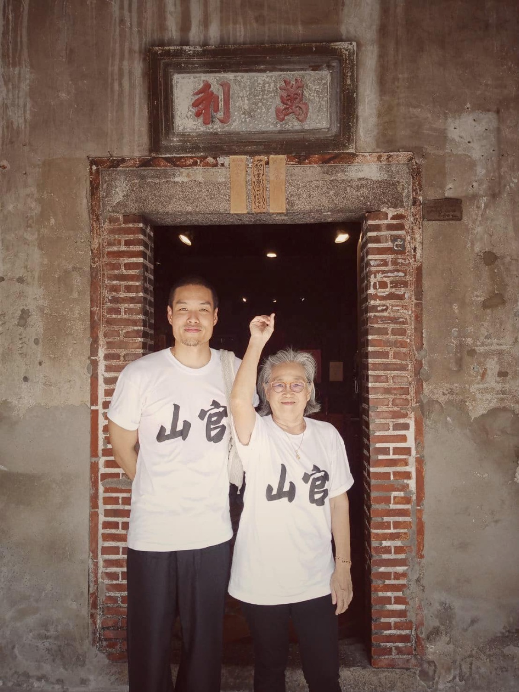
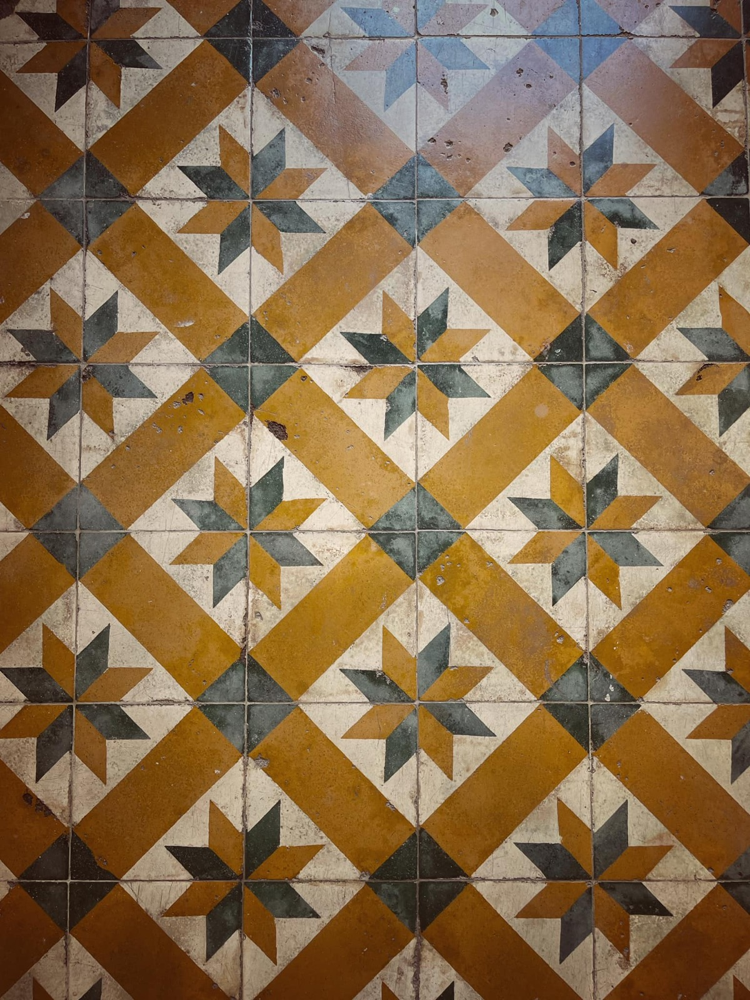
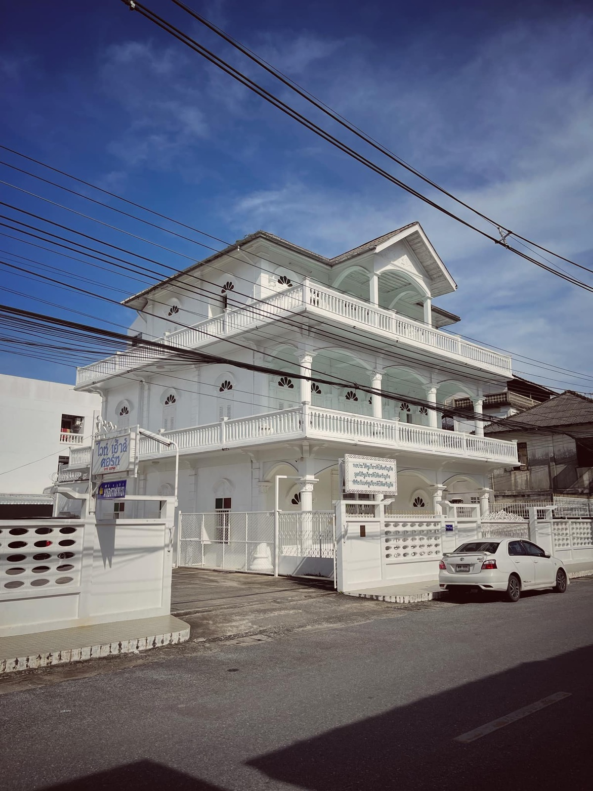
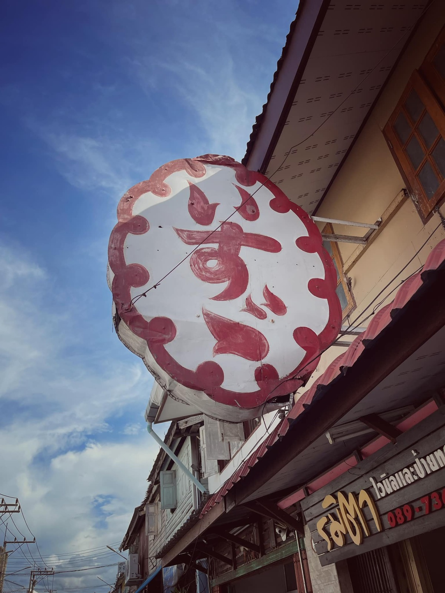

2565 · สังคม · เหตุการณ์
เยี่ยมชมหอประวัติชูเกียรติปิติเจริญกิจ เชื่อมโยงประวัติศาสตร์ตระกูล




ขอบคุณน้องฝนและครอบครัว ที่เป็นธุระเปิดสถานที่โบราณล้ำค่าให้เยี่ยมชม พร้อมไกด์กิตติมศักดิ์พาเล่าเรื่อง สนุกและได้ความรู้มากมาย สำคัญคือโกได้แรงบรรดาลใจเพิ่มมม และได้เชื่อมโยงประวัติศาสตร์กับบ้านโกด้วยน้า 💕
โพสนี้เลือกภาพมา 4 ภาพ ✨
กวนซาน - ว่านลี่ 💕 วันนี้คงไม่ใช่เรื่องบังเอิญ ที่ลูกหลานจีนฮกเกี้ยน บาบ๋า ได้มีโอกาสได้เวียนกลับมาพบเจอหลักฐาน ภูมิปัญญาบรรพบุรุษ และได้เรียนรู้ อาก๊องสอนถึงความกตัญญู ขยันทำมาหากินโดยสุจริตมาเสมอ นี่คงเป็นกุญแจสำคัญสู่ความยั่งยืน และได้สืบทอดรุ่นสู่รุ่น
พื้นกระเบื้องโบราณ ยิ่งเก่ายิ่งเย็นถึงด้านใน สวยยย 🥰
หอประวัติชูเกียรติปิติเจริญกิจ - มูลนิธิชูเกียรติปิติเจริญกิจ - พิพิธภัณฑ์ชูเกียรติปิติเจริญกิจ : ขอบคุณน้องฝนและครอบครัว ที่อนุญาตและเป็นธุระเปิดอาคารแห่งนี้ให้เข้าชม วันนี้ได้รู้เลยว่า อย่างน้อย 5 ปีที่ผ่านมาไม่สูญเปล่า พิพิธภัณฑ์ และ มูลนิธิบ้านอาจ้อเริ่มขึ้นจากจุดเล็กๆ ที่ทีมทุกคนทำด้วยใจมาตลอด แม้นจะยังไม่ครบถ้วนสมบูรณ์ แต่ตั้งใจจะทำให้ดีที่สุดในทุกๆวัน ❤️
ป้าย Isuzu รุ่นอาจ้อแน่ๆ ของจริงมีที่นี่ที่เดียว เมืองปัตตานี 💕
#บ้านอาจ้อสัญจร